Complete graph
| Complete graph | |
|---|---|
| 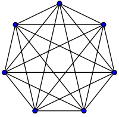
K7, a complete graph with 7 vertices
|
|
| Vertices | n |
| Edges | 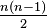 |
| Radius | 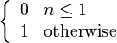 |
| Diameter | |
| Girth | 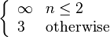 |
| Automorphisms | n! (Sn) |
| Chromatic number | n |
| Chromatic index | n if n is odd n − 1 if n is even |
| Spectrum | 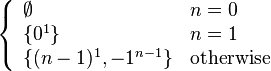 |
| Properties | (n − 1)-regular Symmetric graph Vertex-transitive Edge-transitive Strongly regular Integral |
| Notation | Kn |
{kind=link}
In the mathematical field of graph theory, a complete graph is a simple undirected graph in which every pair of distinct vertices is connected by a unique edge. A complete digraph is a directed graph in which every pair of distinct vertices is connected by a pair of unique edges (one in each direction).
Graph theory itself is typically dated as beginning with Leonhard Euler's 1736 work on the Seven Bridges of Königsberg. However, drawings of complete graphs, with their vertices placed on the points of a regular polygon, appeared already in the 13th century, in the work of Ramon Llull.[1] Such a drawing is sometimes referred to as a mystic rose.[2]
Contents
[hide]Properties[edit]
The complete graph on n vertices is denoted by Kn. Some sources claim that the letter K in this notation stands for the German word komplett,[3] but the German name for a complete graph, vollständiger Graph, does not contain the letter K, and other sources state that the notation honors the contributions of Kazimierz Kuratowski to graph theory.[4]
Kn has n(n − 1)/2 edges (a triangular number), and is a regular graph of degree n − 1. All complete graphs are their own maximal cliques. They are maximally connected as the only vertex cut which disconnects the graph is the complete set of vertices. The complement graph of a complete graph is an empty graph.
If the edges of a complete graph are each given an orientation, the resulting directed graph is called a tournament.
The number of matchings of the complete graphs are given by the telephone numbers
These numbers give the largest possible value of the Hosoya index for an n-vertex graph.[5] The number of perfect matchings of the complete graph Kn (with n even) is given by the double factorial (n − 1)!!.[6]
The crossing numbers up to K27 are known, with K28 requiring either 7233 or 7234 crossings. Further values are collected by the Rectilinear Crossing Number project.[7] Crossing numbers for K5 through K18 are
Geometry and topology[edit]
A complete graph with n nodes represents the edges of an (n − 1)-simplex. Geometrically K3 forms the edge set of a triangle, K4 a tetrahedron, etc. The Császár polyhedron, a nonconvex polyhedron with the topology of a torus, has the complete graph K7 as its skeleton. Every neighborly polytope in four or more dimensions also has a complete skeleton.
K1 through K4 are all planar graphs. However, every planar drawing of a complete graph with five or more vertices must contain a crossing, and the nonplanar complete graph K5 plays a key role in the characterizations of planar graphs: by Kuratowski's theorem, a graph is planar if and only if it contains neither K5 nor the complete bipartite graph K3,3 as a subdivision, and by Wagner's theorem the same result holds for graph minors in place of subdivisions. As part of the Petersen family, K6 plays a similar role as one of the forbidden minors for linkless embedding.[8] In other words, and as Conway and Gordon[9] proved, every embedding of K6 is intrinsically linked, with at least one pair of linked triangles. Conway and Gordon also showed that any embedding of K7 contains a knotted Hamiltonian cycle.
Examples[edit]
Complete graphs on n vertices, for n between 1 and 12, are shown below along with the numbers of edges:
| K1: 0 | K2: 1 | K3: 3 | K4: 6 |
|---|---|---|---|
| 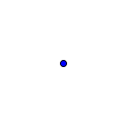 | 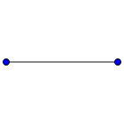 | 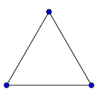 | 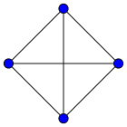 |
| K5: 10 | K6: 15 | K7: 21 | K8: 28 |
| 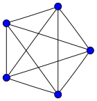 | 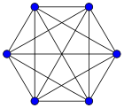 | 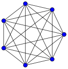 | 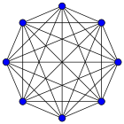 |
| K9: 36 | K10: 45 | K11: 55 | K12: 66 |
| 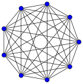 | 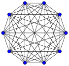 | 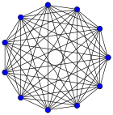 | 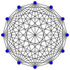 |
{kind=link}
{kind=link}
{kind=link}
{kind=link}
{kind=link}
{kind=link}
{kind=link}
{kind=link}
{kind=link}
{kind=link}
{kind=link}
{kind=link}
See also[edit]
- Complete bipartite graph
- Shield of the Trinity (traditional Christian symbol which is a tetrahedral graph)
References[edit]
- Jump up ^ Knuth, Donald E. (2013), "Two thousand years of combinatorics", in Wilson, Robin; Watkins, John J., Combinatorics: Ancient and Modern, Oxford University Press, pp. 7–37.
- Jump up ^ Mystic Rose, nrich.maths.org, retrieved 23 January 2012.
- Jump up ^ Gries, David; Schneider, Fred B. (1993), A Logical Approach to Discrete Math, Springer-Verlag, p. 436.
- Jump up ^ Pirnot, Thomas L. (2000), Mathematics All Around, Addison Wesley, p. 154, ISBN 9780201308150.
- Jump up ^ Tichy, Robert F.; Wagner, Stephan (2005), "Extremal problems for topological indices in combinatorial chemistry", Journal of Computational Biology 12 (7): 1004–1013, doi:10.1089/cmb.2005.12.1004.
- Jump up ^ Callan, David (2009), A combinatorial survey of identities for the double factorial, arXiv:0906.1317.
- Jump up ^ Oswin Aichholzer. "Rectilinear Crossing Number project".
- Jump up ^ Robertson, Neil; Seymour, P. D.; Thomas, Robin (1993), "Linkless embeddings of graphs in 3-space", Bulletin of the American Mathematical Society 28 (1): 84–89, arXiv:math/9301216, doi:10.1090/S0273-0979-1993-00335-5, MR 1164063.
- Jump up ^ Conway, J. H.; Cameron Gordon (1983). "Knots and Links in Spatial Graphs". J. Graph Th. 7 (4): 445–453. doi:10.1002/jgt.3190070410.
External links[edit]
| Look up complete graph in Wiktionary, the free dictionary. |